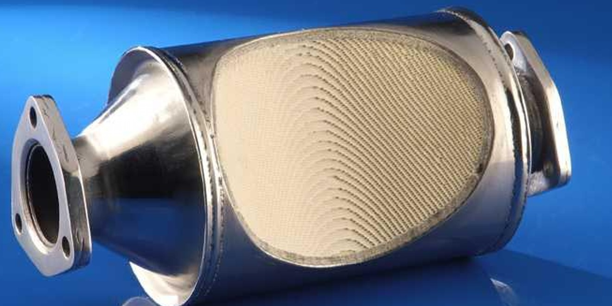

Notícias Recentes
WHO divulga novos dados de qualidade do ar
Na ultima quinta feira dia 9, a "World Health Organization" (WMO) divulgou novos dados sobre a qualidade do ar, de acordo com os dados a qualidade piorou...
Continuar Lendo...É possível cumprir a agenda da ONU até 2030?
Com os crescentes casos de desastres ecológicos e o grande descaso da sociedade para com a preservação do meio ambiente, se duvida do objetivo da ONU de...
Continuar Lendo...Agresão a atmosfera por refinarias reduz em 15% em 2018
Para nossa surpresa, mesmo com o aumento da poluição geral ao redor do mundo, boas novidades ainda surgem, como a ultima pesquisa divulgada sobre as refinarias...
Continuar Lendo...A importancia dos catalizadores automotivos
Presente na maioria dos veículos, mas pouco conhecido, os catalizadores automotivos podem ser a solução para a poluição emitida pelos automóveis...
Continuar Lendo... | Nomes | R.A | Curso |
|---|---|---|
| Augusto | N406BG-0 | Ciência da Computação |
| Alysson | N4352J-9 | Ciência da Computação |
| Gerson | N43858-4 | Ciência da Computação |
| Natã | D872GI-1 | Ciência da Computação |
| Yury | F06216-3 | Ciência da Computação |
© 2019 - 2022 PCS Todos os Direitos Reservados.